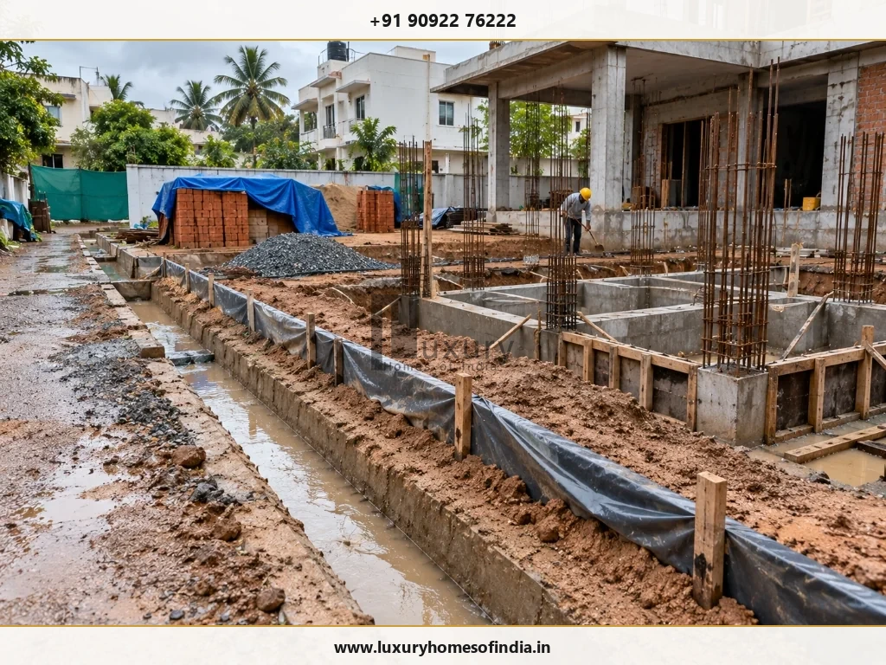
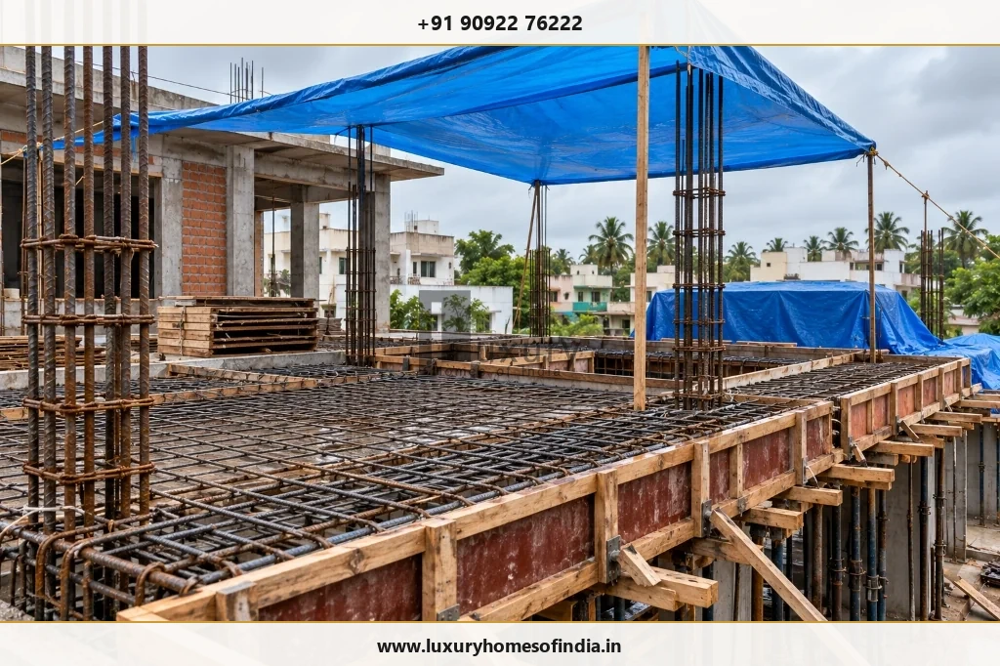
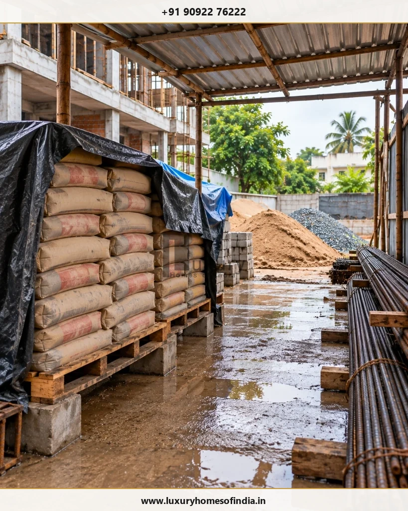
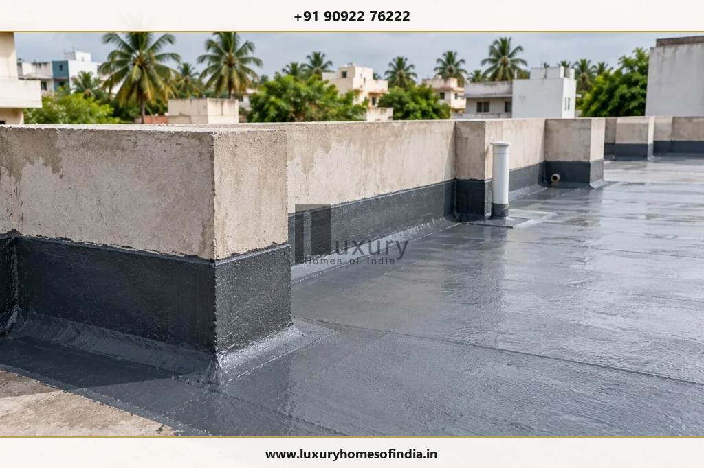

Construction during the monsoon in Chennai requires careful coordination of site drainage, foundation preparation, concrete work, waterproofing, material storage and worker safety. Rain does not automatically require every construction activity to stop, but heavy rainfall, waterlogged soil and unsuitable application conditions can make certain tasks unsafe or technically inappropriate.
Homeowners planning an independent house or luxury villa should ensure that the construction team has a documented weather-response plan, protects vulnerable work, inspects the site after significant rainfall and obtains technical approval before resuming affected activities.
This guide explains 15 practical precautions for managing construction during the Chennai monsoon, including what to check before a concrete pour, how to protect excavations and materials, when to postpone exterior finishes, and which questions to ask a builder. The aim is to help homeowners protect construction quality, make informed scheduling decisions and avoid shortcuts that could lead to defects or expensive remedial work.

Executive Summary: The 3 Golden Rules of Monsoon Construction
- 1. Protect the Work: Install active dewatering pumps, line temporary drainage channels, and elevate cement and reinforcement steel above damp ground.
- 2. Verify Quality Before Resuming: Re-inspect excavated trench bearing surfaces, verify formwork stability, and test soil condition before casting foundations.
- 3. Never Substitute Rain for Curing: Natural, intermittent rainfall is uncontrolled; follow mandatory chemical curing procedures mandated under IS 456:2000.
- 4. Postpone Moisture-Sensitive Finishes: Never apply exterior emulsion, waterproofing coatings, or plaster onto saturated masonry substrates.
Why monsoon planning matters for house construction in Chennai
Chennai's seasonal rainfall can affect excavation, site access, material deliveries, structural work and exterior finishes. The impact depends on the intensity and duration of rainfall, the site's drainage, ground conditions, construction stage and the materials being used.
The correct response is not simply to continue work under a temporary cover or stop every activity whenever it rains. Each task should be assessed against site conditions, the approved construction documents, applicable safety requirements and the manufacturer's instructions for relevant products.
For homeowners, three priorities matter most:
- Protect the work: Prevent avoidable water damage, contamination and deterioration of materials.
- Verify quality: Inspect affected areas and obtain technical assessment where required.
- Manage time realistically: Allow for weather-related interruptions instead of rushing unfinished work.
1. Plan the construction schedule around the weather
Identify weather-sensitive activities before the monsoon affects the project. Excavation, foundation preparation, concrete placement, earth filling, plastering, waterproofing and exterior painting may require additional protection or suitable weather windows.
Ask the builder to identify activities that can continue safely indoors or in protected areas when outdoor work is interrupted (such as internal electrical conduit chasing, plumbing rough-ins, or joinery fabrication). Review material deliveries, site access and the dependencies between construction stages.
Chennai's Northeast Monsoon is generally associated with October to December, although the timing and intensity vary each year. Use current official weather forecasts (IMD Chennai bulletins) rather than relying on calendar dates alone.
Homeowner checkpoint: Ask for a schedule that identifies weather-sensitive activities, inspection milestones and the process for recording delays.
2. Prepare temporary site drainage before heavy rain
Waterlogging can disrupt work, contaminate materials, damage unfinished surfaces and create unsafe access routes. Before forecast heavy rain, the site team should inspect temporary drains, runoff paths and low-lying areas.

Key drainage checks include:
- Temporary drainage routes are clear of construction debris, sand silt, and plastic wrappers.
- Surface water is directed towards an appropriate municipal stormwater discharge or designated percolation pit.
- Excavations are protected from uncontrolled runoff using earth bunds or plastic sheeting.
- Stored materials are not exposed to flowing water or rising puddles.
- Access routes remain safe, stable, and walkable where practicable.
- Water is not redirected onto neighbouring properties or public roads inappropriately.
Drainage arrangements must suit the actual plot topography and comply with applicable local body guidelines.
Homeowner checkpoint: Request a drainage inspection before significant rainfall and a follow-up inspection after heavy rain.
3. Protect excavations and foundations
Rainwater entering foundation trenches can soften exposed soil, cause slope erosion or disturb the founding stratum that must be inspected before foundation work proceeds.
Depending on site conditions, precautions may include diverting surface runoff with peripheral berms, providing sump pits with submersible dewatering pumps, and protecting trench slopes with heavy-gauge polyethylene sheets to prevent side-wall collapses.
After significant rainfall, the responsible structural engineer or civil supervisor should assess whether the founding surface remains suitable. If the soil has softened, eroded or been disturbed, do not conceal the condition or proceed with PCC simply to recover lost time.
Homeowner checkpoint: Confirm that foundation preparation is inspected and approved before concrete is placed.
4. Take precautions during concrete placement
Fresh concrete can be damaged by heavy rain or flowing water. Depending on the timing and severity, rainfall may wash cement paste from exposed surfaces, increase the water-cement ratio, cause honeycombing, or weaken surface durability.

Before a pour, the site team should review the local radar forecast, check formwork rigidity, verify rebar cover, confirm that dewatering equipment is functional, and have large waterproof tarpaulins standing by.
If conditions are unsuitable, the responsible engineer should postpone the pour. If sudden rain begins during placement, follow the approved contingency procedure, finish to an engineered construction joint, cover the fresh pour immediately, and assess any suspected paste washout before subsequent work proceeds.
Crucial Concrete Rule: Never add water to a concrete mix simply to improve workability. Mix adjustments must follow the approved mix design specification and technical direction from the plant engineer.
Homeowner checkpoint: Ask how concrete placement, protection, inspection and any rain-related corrective action are documented in the site logbook.
5. Follow the specified concrete-curing procedure
Rainy weather does not eliminate the need for controlled curing. Fresh concrete must be protected and cured in accordance with IS 456:2000 specifications and the requirements for the particular structural element.
The site team should prevent uncontrolled runoff from washing across fresh surfaces, follow the specified curing method (ponding for slabs, wet hessian wrapping for columns) and maintain curing for the mandatory 7 to 14 days. Formwork removal and de-shuttering must follow the engineer's strict schedule.
Remember: Natural rainfall is erratic and intermittent; it is never a substitute for a planned, continuous curing procedure.
6. Store cement, steel and other materials correctly
Material protection reduces expensive wastage and prevents moisture-related structural defects:

- Cement: Store bags in an enclosed, weatherproof shed, raised at least 150mm to 200mm above the floor on wooden pallets, clear of damp exterior walls. Discard bags that exhibit hydration lumps.
- Reinforcement steel: Stack TMT bars on wooden battens off the soil to prevent mud contamination and accelerated rusting. Material with excessive flaky rust should be wire-brushed or evaluated by the structural engineer.
- Sand and aggregates: Store coarse and fine aggregates on paved surfaces or polyethylene ground sheets to prevent mud and clay silt contamination. Maintain perimeter sandbag berms to prevent washouts.
- Tiles, joinery and electrical goods: Keep internal doors, timber frames, switches, and sanitaryware strictly indoors in dry rooms.
Homeowner checkpoint: Include material storage conditions and delivery moisture checks in routine weekly site reports.
7. Protect temporary electrical installations
Wet construction sites exponentially increase the risk of electrical short circuits, equipment failure, and fatal electric shock.
The site supervisor should ensure that all temporary wiring uses industrial heavy-duty rubber cables, distribution boxes are weatherproof (IP65 rated), and high-sensitivity Residual Current Circuit Breakers (RCCBs / ELCBs) are operational. Earthing pits must be verified.
Do not use tools or extension cords that have become soaked until they have been isolated, dried, and tested by a certified electrician.
Homeowner checkpoint: Confirm that the site has a documented emergency procedure for isolating temporary power during heavy thunderstorms.
8. Verify waterproofing before covering it
Waterproofing is mandatory for roof terraces, podium slabs, sunken bathroom slabs, utility zones, and underground water sumps.
Most elastomeric or polymer-modified cementitious coatings require a clean, dry, or SSD (saturated surface dry) substrate. Applying waterproofing membranes over water-logged concrete traps moisture, leading to vapour blistering and debonding.
Once applied and properly cured, verify that mandatory 48-to-72-hour ponding water tests are documented before floor screeds, protective plaster, or tiles cover the treated surface.
Homeowner checkpoint: Keep written records of waterproofing inspections and ponding test sign-offs before allowing tiles to conceal treated areas.
9. Protect masonry and plastering from excessive rain
Continuous rain flowing across freshly laid brickwork or wet plaster washes away cement mortar, weakens bond strength, and leads to efflorescence (white salt leaching).
The team should cover newly laid blockwork at the end of each day with tarpaulins. Before applying wall putty, primer, or internal finishes, verify with a digital moisture meter that the plaster has dried to permissible moisture limits (typically below 10–12%).
Do not cover damp plaster simply to meet an arbitrary calendar deadline; trapped moisture inevitably causes mould growth and peeling paint.
10. Postpone exterior painting when conditions are unsuitable
Exterior acrylic paints, elastomeric coatings, and silicone weather-proofers require specific temperature, relative humidity (typically below 85%), and dry substrates for proper polymer film coalescence.
Painting onto a rain-damp wall guarantees future blistering, patchiness, and adhesion failure. Do not rely on an arbitrary waiting rule; inspect actual surface moisture and follow the paint manufacturer’s technical data sheet (TDS).
Homeowner checkpoint: Require the contractor to verify substrate moisture with a surface probe before approving exterior primer application.
11. Check roof slopes, outlets and rainwater provisions
Terrace drainage and waterproofing must be engineered together. Even the best waterproofing will eventually fail if roof water ponds indefinitely due to inadequate slopes.

Before completing terrace tiles or weathering course, confirm:
- The screed maintains a consistent minimum slope of 1:100 (or 1:80) towards rainwater outlets.
- Adequate numbers of 100mm or 110mm PVC rainwater downpipes are provided with grating strainers.
- Parapet wall corners have rounded cement coving fillets (45-degree angle) with upturned waterproofing.
- Downpipes discharge into functional rainwater harvesting (RWH) filtration chambers as per GCC statutory guidelines.
Homeowner checkpoint: Inspect roof drainage slopes and perform a flood test before the final weathering tiles are installed.
12. Inspect the site after heavy rainfall
A thorough site walkthrough after a torrential rain event prevents secondary damage and accidents.
Inspect foundation excavations for slope washaways, check scaffolding footing stability on softened soil, verify that temporary electrical boxes are bone-dry, and examine stored cement for dampness. Document all observations, pump out standing water, and obtain structural sign-off before workers re-enter deep trenches.
Homeowner checkpoint: Request a written post-rain inspection note confirming that safety and soil stability have been re-verified.
13. Prioritise worker safety during monsoon conditions
Wet weather significantly amplifies slip and fall hazards, trench cave-ins, and electrical risks.
The site engineer must enforce mandatory personal protective equipment (PPE)—including gumboots with slip-resistant treads and safety helmets. Scaffolding planks must be secured against sliding, ladders tied off, and deep excavation edges barricaded with fluorescent warning tape. Work on wet, slippery roof edges or external scaffolding must be suspended during high winds and downpours.
14. Build weather contingencies into the budget and programme
Unforeseen rainfall can impact daily labour turnout, ready-mix concrete logistics, material protection expenses, and pump hire costs.
Account for a 2-to-4 week weather contingency window in your baseline construction schedule when building through October to December in Chennai. Maintain a contractual understanding that rain delays are recorded transparently with site rainfall logs.
The priority is always to preserve quality and safety—never to cut corners simply to recover calendar days.
15. Use a monsoon construction checklist
Use this practical checklist before forecast heavy rainfall and immediately after rain subsides:
Actions Before Heavy Rain
- Review 48-hour IMD weather forecasts and adjust daily pour schedules.
- Clear temporary drains, gullies, and runoff paths of all construction debris.
- Erect soil bunds and cover excavation slopes with polyethylene sheeting.
- Position submersible dewatering pumps and test fuel/power backup.
- Anchor waterproof tarpaulins over fresh concrete and brickwork.
- Elevate cement bags on pallets inside a sealed, weatherproof shed.
- Disconnect and isolate temporary electrical cables and tool circuits.
- Secure loose metal sheets, scaffolding boards, and light formwork against wind.
- Ensure safe, gravelled pedestrian access to essential site points.
- Assign clear emergency roles to the site supervisor and watchman.
Actions After Heavy Rain
- Conduct a complete site inspection of all trenches and structural footings.
- Check foundation trenches for waterlogging, silt wash, and side-wall slumping.
- Inspect newly cast concrete surfaces for paste erosion or water damage.
- Inspect stored cement bags and TMT steel bundles for moisture intrusion.
- Have a certified electrician inspect and test all temporary power boards before re-energising.
- Pump out accumulated standing water safely without flooding neighbour plots.
- Check completed ground-floor rooms and basements for signs of water ingress.
- Log weather downtime, material loss, and necessary corrective actions in the site register.
- Obtain structural engineer clearance before resuming work in affected foundation trenches.
- Resume exterior work only when substrate surfaces and weather conditions are technically suitable.
Can house construction continue during the Chennai monsoon?
Yes. Some construction activities can safely continue during rainy weather if site conditions, technical requirements and safety arrangements permit. Other activities must be postponed until conditions improve.
| Construction Activity | What Determines Whether Work Can Proceed? | Monsoon Feasibility |
|---|---|---|
| Design & documentation | Availability of design inputs, engineering calculations, and municipal approvals. | Full Progress Indoors |
| Material procurement | Weatherproof storage capacity, delivery access, and supplier lead times. | Proceed with Protection |
| Excavation & earthwork | Soil stability, absence of deep waterlogging, and safe trench access. | Postpone During Torrential Rain |
| Foundation casting | Firm bearing soil, verified rebar, and active dewatering capability. | Conditional on Clear Weather |
| Concrete placement (slabs) | Dry weather window, available canopy covers, and ready-mix logistics. | Postpone if Heavy Rain Imminent |
| Masonry & internal plastering | Protected indoor environments, covered blockwork, and dry mortar mixing. | Full Progress Indoors |
| Internal electrical & plumbing | Dry internal rooms, safe power tools, and completed roof slabs. | Full Progress Indoors |
| Waterproofing applications | Bone-dry substrate, relative humidity below limits, and zero rain during curing. | Postpone Until Substrate Dries |
| Exterior painting & texture | Dry exterior walls (moisture < 10%), absence of rain, and low humidity. | Postpone Until Clear Weather |
| Modular interiors & joinery | Off-site factory fabrication, protected indoor transport, and dry rooms. | Full Progress Indoors |
There is no universal rule that all work must stop whenever it rains or that every activity can safely continue under a temporary cover. The responsible site professional must assess actual conditions and relevant technical requirements.
Common monsoon construction mistakes to avoid
Costly Monsoon Shortcuts to Avoid
- Treating rain as sufficient concrete curing: Natural rainfall is erratic. Follow specified ponding or wet hessian wrapping methods as per IS 456.
- Allowing standing water in excavations: Softened clay or silt at the bottom of a trench ruins bearing capacity. Always dewater and re-inspect before PCC.
- Covering damp surfaces too early: Applying waterproofing or exterior paint over wet plaster traps moisture, causing blistering, efflorescence, and damp patches.
- Storing cement directly on wet ground: Moisture absorption causes hydration lumps, rendering cement useless and dangerously weak.
- Ignoring temporary site drainage: Directing uncontrolled runoff onto neighbouring plots causes legal disputes and site flooding.
- Rushing to recover lost time: Never bypass mandatory 7/28-day concrete cube tests, waterproofing ponding tests, or drying times simply to catch up.
Frequently asked questions
Construction can continue when site conditions, technical requirements and safety arrangements permit. Excavation, concrete placement, waterproofing and exterior finishes may require extra precautions or postponement during unsuitable weather.
It depends on the weather conditions, the pour, the available protection and the approved procedure. Heavy rain or flowing water can damage fresh concrete. The responsible engineer or site professional should decide whether placement can proceed safely and how the concrete will be protected.
No. Concrete must follow the specified curing procedure. Natural rainfall is not a substitute for controlled curing and protection.
Divert surface runoff, manage standing water, maintain safe excavation conditions and reassess the founding surface after significant rainfall. Obtain engineering review if the soil has been disturbed or its condition has changed.
Some products can be applied only when specified substrate and weather conditions are met. Follow the manufacturer's instructions, complete required curing and testing, and obtain approval before covering the treatment.
Keep temporary drains clear, provide appropriate surface-water routes, protect excavations and avoid directing runoff towards neighbouring land. Drainage must suit the actual plot and applicable requirements.
It may affect labour productivity, pumping, material protection, deliveries and the project schedule. The actual impact depends on the project and contract. Clarify how weather-related delays and additional work will be handled.
Yes, when the substrate, forecast or environmental conditions fall outside the product manufacturer's application requirements. Wait until the surface is suitable for the specified coating.
Check excavations, drainage, stored materials, exposed concrete and masonry, temporary electrical installations and signs of water ingress or instability. Obtain technical assessment before affected work resumes where necessary.
A well-coordinated construction team can plan weather-sensitive work, protect materials, coordinate inspections, record progress and manage schedule adjustments within the agreed scope. Homeowners should confirm these responsibilities in the contract and project plan.
Plan your home construction with the monsoon in mind
Construction during the Chennai monsoon requires careful attention to drainage, foundation preparation, concrete placement, curing, waterproofing, material storage and worker safety. Rain-related interruptions cannot always be avoided, but good planning and timely inspections can reduce preventable damage.
For homeowners planning an independent house or luxury villa, the priority is a construction programme that accounts for weather-sensitive activities and does not compromise technical requirements to recover lost time.
Luxury Homes of India (LHI) provides residential construction, architectural design and planning, structural engineering, interior execution and turnkey construction services, as described on its published service pages.
If you are planning a home in Chennai or the surrounding region, discuss your plot, design stage, construction requirements and weather-related scheduling considerations with the LHI team.
Luxury Homes of India (LHI)
Discover engineered monsoon-resilient construction, site drainage planning, and single-point turnkey accountability for bespoke luxury villas across Chennai.
- Website: https://www.luxuryhomesofindia.in/
- Phone: +91 90922 76222
- Email: info@luxuryhomesofindia.in
- Address: #85, 4th Floor, Lotus Tower, Guindy, Chennai – 600032
Disclaimer: This article provides general informational guidance and does not replace project-specific engineering, construction specifications, product instructions or professional safety advice. Construction decisions must be based on the approved design, actual site conditions and applicable requirements. Suspected structural damage or unsafe conditions must be assessed by the responsible professionals before affected work resumes.